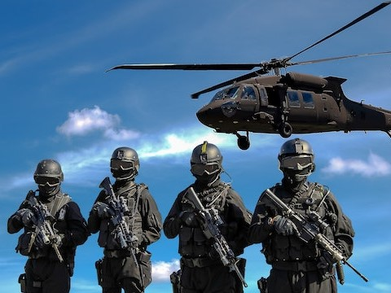

Surveillance and Rescue Operation
Drones have become an essential tool for surveillance and rescue operations, providing a new level of situational awareness and operational efficiency. Whether you're engaged in a search and rescue mission or monitoring a high-security area, a drone can provide valuable real-time information and imagery that can make all the difference in critical situations. With high-resolution cameras, infrared sensors, and other specialized equipment, drones can swiftly and safely survey vast areas, providing an unprecedented level of visibility and detail. This makes them an ideal tool for emergency responders, law enforcement agencies, and security personnel who require rapid situational assessments. Moreover, drones can be deployed in hazardous or hard-to-reach locations, such as rugged terrain or disaster zones, where traditional surveillance and rescue methods may be impractical or impossible. Drones can efficiently cover vast areas, enabling them to save lives and protect property by providing critical information and situational awareness. Investing in a drone for surveillance and rescue operations is a wise decision that offers enhanced capabilities, improved safety, and increased efficiency in emergency situations. Don't wait any longer; take advantage of this innovative technology and provide your team with the tools they need to respond quickly and effectively to any situation.


Safety and Security
Drone surveillance is harnessed for safety and security objectives across diverse industries, like public safety, border security, and critical infrastructure protection. Drones outfitted with high-resolution cameras and thermal imaging sensors can procure current images and data of a designated area, enhancing situational awareness and enabling early identification of potential safety and security hazards. Besides, drones can be employed for crowd supervision, emergency response, and search and rescue operations, yielding valuable data to first responders and facilitating the coordination of rescue missions.
